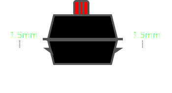
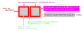

This is a Macro written with the intend of aiding people in making a keyboard in FreeCAD. Basically I didn't want to lay out every single key position by hand and this is the result of that.
Design your keyboard layout on keyboard-layout-editor.com paste the Raw Data fields output into this macro and off you go.
A fair amount of the work in this macro is 'inspired' by Swill's kb builder which is a tried and tested tool and should be a solid base. Official specs are hard come to by and I only managed to find them (partially) for Cherry MX and Gateron switches and stabilizers instead of trying to stick to them to the letter I opted to use Swill's approach*
The Macro is meant to be intuitive to use and I'd say just try and see what happens, but pay attention when things turn a red color as it indicates something is either very non-standard or going wrong
*Swill mainly deviates from the '2u' stabilizer from the official Cherry MX spec, but in a positive way - increasing stability.
Disclaimer:. This project contains a whole lot of firsts to me and might not be the best way of approaching things, before writing this macro I've never used The Qt Framework, the Python programming language or any form of CAD software.
Limitations
No support for stepped keys, changing them to a normal key for this macro should be fine, to the best of my knowledge is only visual to the keycap. Switch positioning should be the same
No big enter support, Sorry I couldn't find any documentation as to where to place the switch for a big enter
No support for accoustic or flex cutouts, you'll have to add them yourself
No automatic screwhole placement
FreeCAD freezing for (up to) several seconds when pressing the Ok button is a known limitation but I don't think it can be fixed. Sketcher is single threaded in nature and struggles when there's many constraints in a single sketch, I've tried to have as few constraints as possible per Sketch but the KeyPosMasterSketch simply cannnot be any simpler.
Index
Macro description
Clicking one of the questionmark icons in the macro will take you to the relevant section of this document, or use the list below.
This macro is intended to be used in conjunction with the keyboard-layout-editor.com website. On this website you can
create a keyboard layout and it will generate a JSON5 code under the "</>Raw data" tab. You can copy/paste this code into the keyboard-layout-editor.com titled field in the macro.
Whilst this input field is focussed the keyboard will render keycaps, when focus is lost it just shows the switch and stabilizer cutouts. This is done so that when you paste a layout the result is easy to compare to the site.
Plate
Plate corner style
You can pick between an angled ,
rounded
or right angle style.
Selecting the right angle option will hide the radius input(s).
Corner Radius
The corner radius inputs are only available for the rounded and angled corner styles.
If the Single radiobutton is checked the X and Y distance are equal
For rounded corners that means circular corners (a quarter of a circle)
For angled corners that means 2 45° angles
If the Seperate X&Y radiobutton is checked the UI will show a second input allowing you to set the X and Y distance seperately for elliptically rounded corners or an adjustable slanted angle
Style/Radius per corner
Checking this option disables the global style and radius inputs and present the same controls but on a per corner base
Note 1: Altering values relating to corners may result in cutouts being drawn in red because the cutout is (partially) outside the plate.
Note 2: In extreme cases the rounding or angling of one corner might start overlapping with another corner in which case the the entire corner will be highlighted in red
Plate thickness

Per Cherry's specifications plate thickness should be 1.5mm (±0.1mm). It is not recommended to deviate from this.
Selecting the plate thickness field will change the preview to the image on the right. This is a side view of the plate showing where the plate should sit in the switch, it should fall right in between the little nubs which it does at 1.5mm.
Less than 1.5mm will lead to wobbly switches due to the clips not having a tight fit
More than 1.5mm prevents the switches from clipping onto the plate.
Acrylic plates sometimes do go up all the way to 5mm, at that point the bottom of the plate and the bottom of the switch housing are at an equal level
More than 5mm means the bottom of the switch will be recessed into the plate at which point a PCB is unable to seat the switches properly.
Padding
Pad from
Reserved
Comes from the concept of using '1u' of space for every normal sized key, by default 1u is 19.05mm* it then takes the padding from there. (Recommended)
Cutout
Will begin padding from whichever switch is closest to one of the sides, useful for very fine grain control or making a plate as small as possible

Fig 1. Keyspacing for a simple keyboard of 2 keys
Pad all by
Sets the padding on all sides by the amount given in the input field
Padding per side
Allows padding to be set for the top, left, right and bottom individually
*This is 19.05mm spacing is based on what is set under Cutouts > Spacing
When selecting "Pad from -> cutout" with the padding at the default 0 all switches contacting the side will be highlighted in red to indicate an error
The color used for highlighting the padding to your FreeCAD theme (it's the same as the background of a text selection)
Cutouts
Switch
- Rotate with vertically stabilized keys
A global toggle to rotate switches by 90°c for vertically layed out keys. Confusingly with the default selected Cherry switch it does nothing as rotating a square results in the same square.
Basically think of something like the "+" and "Enter" buttons on the numpad. Should the switch for keys like these be rotated?
No - don't rotate
Most Cherry keyboards don't seem to rotate any switch. This makes for tidier PCBs were all the switch contacts are orientated the same
Backlit keyboards with shine-through keycap likely want to prevent rotating switches as the switch might have space reserved for a LED or even have a lens to enhance the effect of LEDs.
Yes - Rotate
Alps keyboards seem to usually rotate the key with the stabilizer
With the standard Cherry cutout being a square it's impossible to tell whether it rotated 180° or not
Left clicking a stabiliser will rotate the switch on a per key basis
This Macro offers multiple switch cutouts (similar to Swill's plate builder), each with their own pros and cons.
Depending on where you get the work done you might be able to save costs by keeping the shapes as simple as possible
Recap
Cherry MX
Cherry MX Openable
Cherry MX + Alps
Alps
Stability
Great
Good
Okay
Great
Openable
(Whilst soldered)
No
Yes
Cherry: Yes
Alps: No
No
Complexity
(might increase costs)
Easy
Hard
Medium
Easy
Unless flexibility is desired stick to the standard cutouts for the most secure mount
If you're building a plate mounted keyboard stability is important. If you're building a PCB-mounted keyboard stability will come from the solder itself.
Cherry MX
The Cherry MX standard as per Cherry's specifications, fits Cherry MX keys (and clones)
- basically just a simple 14mm square (according to the specs up to a 0.3mm corner radius is allowed as well
although this macro just does square holes)
Cherry MX Openable
The same 14x14mm square as Cherry MX, but with some additional 'wings' (and thus complexity) to the sides that allow
for opening of the switch[1] whilst leaving the (presumably soldered) bottom of the switch to remain on the PCB.
This allows for easy access to the inside of the switch for modding purposes (replacing the spring, lubing etc)
but might lead to a more wobbly switch due to less contact surface with the plate.
Cherry MX + Alps
A hybrid of Cherry MX and Alps by combining both footprints so the plate can fit either switch,
this does greatly reduce the amount of contact surface between the plate and the switch as a Cherry switch
will only make horizontal contact whilst Alp switches will only make vertical contact with the plate.
The Cherry switch would be openable (see above) due to extra side clearance for the Alps switch.
The least stable but most flexible mount option.
Some keyboards have flipped stabilizer cutouts, enabling this button allows you to do the same for all stabilizers in one go.
As far as I know there's no practical reason to do so but the option is there if you want to use it.
A right click will flip the stabilizer on a per key basis. This can be useful in for example an ergonomic layout such as the Ergodox where the right side mirrors the left, flipping one side can make it truely mirrored
Switches and Stabilizers go hand in hand. All keys require switches and all keys above a certain width require and will be automatically assigned a stabilizer.
The Alps stabilizer option is disabled unless the Alps switch is selected as I could not think of a case where someone would want Alps stabilizers for Cherry or Hybrid switches.
This macro offers several stabilizer cutout options. Each with its own pros and cons
Type
Cherry+Costar
Cherry
Costar
Alps
Compatibility
Costar, Cherry, PCB and Plate mount
Cherry, PCB and plate mount
Costar
Alps
Stability
Okay
Great
Great
Great
Visual
Complexity
(might increase costs)
Hard
Hard
Easy
Easy
Basically, unless you're planning on using Costar at any point Cherry for Cherry, Alps for Alps
Cherry, Cherry+Costar, Costar
Technically Cherry sizes work as follows:
Everything bigger than 2u and smaller than 3u gets the standard 2u stabilizer size (which is 1.25 * 19.05)
Everything bigger than 3u gets calculated using the formula KeySize-1 * 19.05
Everything bigger than 8u gets converted to 8u as there's no stabilizers wider than that and even 8 is technically already outside the standard sizing
Cherry standard key and stabilizer sizes
Size
1
1.25
1.5
1.75
2u
2.25u
2.75u
6.25u
7u
Switch to stabilizer distance
(in mm)
23.8125
100.0125
114.3
Note: Keys 2u and up will be stabilized
Alps
For Alps I cannot find any official documentation so the numbers are based off those found on existing keyboards and other tools, curiously Alps stabilizes 1.75u keys unlike Cherry.
The problem with Alps is that I don't know what formula they use to calculate stabilizer sizes. So if you plan on recycling Alps stabilizers and keycaps from an old keyboard I strongly suggest you stick to their standard sizing:
Alps standard key and stabilizer sizes
Size
1
1.25
1.5
1.75u
2u
2.25u
2.75u
6.25u
6.5u
Switch to stabilizer distance
(in mm)
11.938
14.096
41.859
45.3
If you're using non-standard Alps sizing a fallback to Costar stabilizers and the Cherry formula will be used
Kerf (-1mm to +1mm)
tldr; The amount your cuts shrink by when entering a positive number, or grows by if entering a negative number
Kerf traditionally allows for compensating of extra material by the cutting process itself and allows you to do so by inputting a positive number.
If however you are 3d printing instead of cutting a hole your printing the surroundings effectively creating a hole. In that case instead of a positive number you may want to use a negative number to offset your material expanding as it cools.
If you're outsourcing the cutting of your plate this might be something to ask if you should compensate for, most companies will automatically accomodate for it
Spacing
Determines the space between the center of switch cutouts, 19.05mm is the default and highly recommended default option. It's how practically every keyboard ever is made
However, there's a few keyboards on the market that use 19mm spacing presumably for making nice round numbers. The only other potentional benefit I can think of is a slightly smaller keyboard saving a tiny amount of material
Stabilizer width calculations will use 19.05mm regardless of the setting used here as as far as I know the stems on the keycaps are always calculated using 19.05mm spacing and for big keys this 0.05mm deviation is multiplied which would worsen any potentional issues.
Sizing
At the bottom of the macro window a quick overview is given to give you an idea of what you'll need to turn this keyboard into reality.
In both the stabs and keys tables the top row indicates which sizes are used in your keyboard layout and the bottom rows shows how many of that particular size. The cells are also color coded to indicate if you're using any key or stabilizer sizes that are hard to come by.
Green
Bog standard - easy to buy
Orange
Could be problematic to find, you might have to look around a bit and order from somewhere you're not familiar with
Red
Theoretically they exist but finding them is a different matter
Bright Red
You're in fully custom terrority now, you'll either have to fabricate something yourself or commission someone to do it for you
This macro comes with serial.py from pykle_serial with some very minor changes to avoid using other external libraries.
hajimen
MIT
Creator of keyboard-layout-editor.com which this macro uses the output of. Also the author of kle-serial on which the above pykle_serial is based
ijprest
MIT
Honorable mention #1: swill's kb_builder, although no code is used directly from it - it has been a source of inspiration and a good way of double checking if the results here make sense
Honorable mention #2: The Qt Company for providing an awesome framework which allowed me to get a lot done with less code than I expected.
This is my first experience with Python, Qt (PySide2) and FreeCAD. Chances are the code could be greatly improved upon, feel free to contribute.
The same goes for the SVGs, I'm no artist so any artists/designers that can do a better job are welcomed.
Other tools
This is of course not the only tool for a custom keyboard, here's some others I've found that you may want to check out
Provides you with FreeCAD files to allow full customisation
Supports stabilizer sizes the others don't support by calculating them rather than looking up them up from a known list
Warning: Going custom with sizing will likely mean making or commissioning own keys and stabilizers as well.
Cons:
Not mature software, double check everything makes sense
Cherry switches only
Different:
Costar mounts are centered with the switch whereas aio3 places them at a downwards offset and swills at an upward offset.
I opted for center alignment as it is the most aestetically pleasing option in my opinion.
I own a keyboard that has them centered, so I can confirm it works fine
Diving in deep
Below are some useful pointers/links/tidbits for myself that I figured I'd document here as to help others. Let's start off with some terminology
Scratchy
The feeling transmitted from a key where one hard surface rubs against another (basically a non smooth feeling, most pronounced on non-lubed keys that haven't been worn in yet)
Bottoming out
Pressing the key all the way down
Actuation point
When pressing down the key the point at which the keyboard registers the keystroke
Actuation force
The amount of force that needs to be applied to press the switch down
Ping
High frequency sound caused by vibrating metal (vibrations traveling through the mount plate or the springs inside the switches)
Clack
Higher frequency version of the sound made when hitting a key, usually a thock is preferred (see below)
Thock
Lower frequency version of the sound made when hitting a key, usually due to reducing the higher frequency noises with some form of dampening
Sound & feel
There's a lot that can be done to affect the sound and feel of a keyboard. In general when it comes to noise less is considered to be better; and hollow/scratchy/echo sounds are to be avoided especially. The 'feel' people are divided on, some prefer a solid feeling steel plate keyboard, others find it fatiqueing and want some give in the typing experience etc etc
The aim of most of these is to reduce unwanted noise and increase how 'smooth' a key feels or just how nice the keycap itself feels.
Brass - from what I understand slots in between steel and aluminium
Aluminium - More flexible than steel and a little bit more quiet (the most common option)
Polycarbonate - Absorbs sound, a quieter thockier option but not as rigid as the metals, great for RGB LEDs
Carbon Fiber - Very expensive, very flexible
Lubing switches results in a smoother less scratchy feeling
O-Rings will dampen 'bottoming out' keys a great deal. (Pro: A lot more quiet, Con: Mushy feel)
Pad the inside of keys (or at least the larger ones) with foam to reduce noise (many commercial products are available for the spacebar)
Replace the spring for the spacebar switch (or the entire) switch for one with a higher actuation force if your thumbs hit the keyboard harder than your fingers do
Applying switch films increases stability of the switch and gives a deeper (thock) sound
Foam pad sticker between switch and mount plate, decreases noise when bottoming out
Foam pad sticker between switch and PCB, decreases noise when bottoming out
A softer sound but it wears down more quickly than PBT and gets a 'shiny' look
PBT
A more resilient (harder) plastic but it results in a more pronounced sound
Exotic
CNC'd metal or custom made ceramic (extremely expensive)
Doubleshot is a term you'll often see and refers to the production where one plastic is shot into another to form the keycap and the 'writing' on it. Usually the outside is black or white and the inside is the opposite color and/or translucent, translucency allows for lighting to shine through.
The alternatives would be laser etching, printing on the letters or labeling them stickers. The last two options are considered the worst and least durable methods.
Looks
Looks are mostly down to material (aluminium, steel, acrylic, etc). The choice of keycaps (and their material) and the paintjob (if any)
Pudding keycaps. Keycaps where a good part of the side of the keycap is translucent to allow for a large amount of light to shine through
North vs South facing switches. This refers to where the LED on the PCB is mounted and thus the LED cutout/Lens on the switch should face.
North: Better for RGB as key-legends are usually on the top of keycaps and thus closer to the led (see South for the downside)
South: Better keycap compatibility. Keycaps come in various profiles (shapes), some of which can have clearance issues for LEDs with north facing switches.
Rule of thumb is that south facing switches are preferred unless RGB is important to you, in which case go with north-facing switches and keep the needed LED clearance in mind when buying keycaps
Plate key and stab cutouts are north/south agnostic. The orientation is solely dependent on the PCB.
Switches
There's 3 main types of switches: linear, tactile and clicky.
People can be very pasionate about a certain type and brand of switch so I won't go into too much detail and stick to the most common types/colors/actuation force
Linear switches (red 45g, yellow 50g, black 60g) have the same feeling when pressing them down throughout the entire distance (popular with gamers)
Tactile switches (brown 45g, clear 55g) have a 'bump' on the way down
Clicky switches (blue 60g, green 65g) have a 'bump' and a clearly audible click (usually preferred by typists - and hated by everyone else in the vicinity and/or voice chat)
Some 'sub types' were added over the years, namely speed switches, silent (or quiet) switches and switches that try to help RGB keyboard shine brighter/distribute the light better
Speed switches have a shorter actuation distance
Silent switches have a little rubber dampener applied to the inside of the switch. This reduces noise but affects the feel which some may prefer whilst others dislike it.
*RGB switches have a transparent top housing to more evenly distribute light and depending on the brand may have a 'lens' above the LED position to enhance the lighting effect.
* RGB switches do not come with a LED, the actual RGB part (the LED) is on the PCB
Actuation distance and force
Now what is this about actuation distance and actuation force and all these different colors?
Actuation Force
The amount of force needed to push the switch down. If you're heavy handed or like to rest your fingers on the keyboard go for a higher value, if you want to spare your fingers the workout go with a lower value. For heavy keycaps such as those made out of metal or ceramic you may want to avoid going with very low values
Actuation Distance
How far the switch has to be pushed in to register as pressed. Theoretically the faster this happens the faster you can react and do it again (which is why speed switches with the shortest actuation distance are aimed at gamers)
The colors are intended to easily tell the switches apart as they're all different in a way. Technically yellow and green aren't used by Cherry but these colors are used by Gateron which is also a very popular choice. My numbers aren't entirely acurate as Cherry provides actuation force numbers in centinewton and gateron in grams but they're close enough
Switches - even deeper dive
There's mechanical, optical and magnetic switches. I am however mostly interested in mechanical and optical switches as magnetic switches aren't really available to hobbyists
Mechanical switches are the easiest/most popular option but require debouncing.
Rather than "on" when pressed and "off" when released the "on" is initially a series of very rapid on/off events due to the mechanical contacts bouncing. If not handled this would mean that every push of the key is likely to register multiple times. Keyboards 'debounce' in software by running a timer when the first "on" is registered and resetting it every time the on is registered again before the time runs out. When the timer does run out it's considered to be the end of that keystroke.
Running timers and having to wait for them to time out adds delay (a very minor delay in a long chain of things that can add delay) so whether it's noticable... opinions are split.
Many options are available
Known wide spread technology with lots of documentation available
Hot swap sockets are fragile
Requires debouncing adding delay/complexity
Complexity is in the switch making the PCB cheaper
Optical switches Are gaining popularity. They do away with mechanical contacts and work by having a light beam and a light recepter. When the switch gets pushed the light beam eithers get blocked or revealed (method depend on the exact switch). This doesn't require any debouncing and thus no timers that delay the process of registering a keystroke.
The optical switches available to hobbyist are very 'dumb' and have no electronic parts whatsoever - unlike mechanical switches this means they don't require any electrical contacts they only need to block or unblock a lightsource.
Information on this is very scarce but I found the keychron optical keyboard which provides kicad files in which I've found the IR12-21C_TR8 infrared emitter and PT12-21B_TR8 photo transistor.
More durable (no corroding contacts or fragile connectors)
Always hot swappable as they don't need contacts on the PCB
+ Additional benefit is that not needing contacts means there's no need for notoriously fragile hotswap sockets
Newer technology which means there's less documentation for it available
Not many options are available, there's Gaterons optical line and that seems to be it for now (on the plus side they seem to re-use almost all of the regular mechanical switch housing minus the parts that aren't needed so they should be compatible/interchangable for mods and some parts)
Complexity is in the PCB making the switches cheaper
Research to be done: Initial indicators pointed to not being able to matrix optical sensors which would require a lot more pins from the MCU or a way to multiplex them. keychron's kicad files seem to have a matrixed setup? (I don't know much about PCBs and KiCad at all yet!)
Opensource keyboard firmware
Don't re-invent the wheel (unless that's what you like doing), there's opensource keyboard firmware available for common MCUs like the STM32F103, STM32F411, RP2040, nRF52840 and ATmega32U4 which are available on cheap accessible PCBs
like the Raspberry Pi Pico, Arduino Pro Micro or the "Blue Pill", "Black Pill" and Teensy boards.
TMK The oldest free keyboard firmware(?) Not quite sure what its selling point is, it hasn't been updated in some years
QMK Probably the most used open keyboard firmware. Limited wireless support
Intergrates with VIA allows setting up different keylayers and macros and such
Intergrates with VIAL (opensource alternative to VIA, does RGB configuration as well!)
ZMK Mostly aimed at wireless keyboards and extremely low power usage, relatively young project
KMKfw Aimed at both wired and wireless use. Uses a fork of Circuit Python
My personal choice due to the low cost of a Banana Pi Leaf S3 board with a powerful ESP32-S3 and support for bluetooth and build-in battery circuitry
The officially supported MCU list is fairly short but it should run on any CircuitPython compatible board with 256KB of flash storage and HID support over USB and/or Bluetooth
Intergrates with PEG allowing OLED screen, RGB LEDs, Encoder and keymapping customisation.